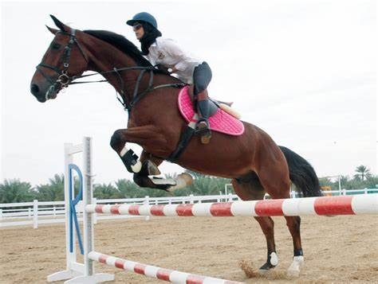

Training Horses

Horse training refers to a variety of practices that teach horses to perform certain behaviors when commanded to do so by humans. Horses are trained to be manageable by humans for everyday care as well as for equestrian activities, ranging anywhere from equine sports such as horse racing, dressage, or jumping, to therapeutic horseback riding for people with disabilities.
Historically
horses were trained for warfare, farm work, sport and transport purposes. Today, most horse training is geared toward making horses useful for a variety of recreational and sporting equestrian pursuits. Horses are also trained for specialized jobs from movie stunt work to police and crowd control activities, circus entertainment, and equine-assisted psychotherapy.
There is tremendous controversy over various methods of horse training and even some of the words used to describe these methods. Some techniques are considered cruel; other methods are considered gentler and more humane. However, it is beyond the scope of this article to go into the details of various training methodology, so general, basic principles are described below. The see also section of this article provides links to more specific information about various schools and techniques of horse training.
more information click